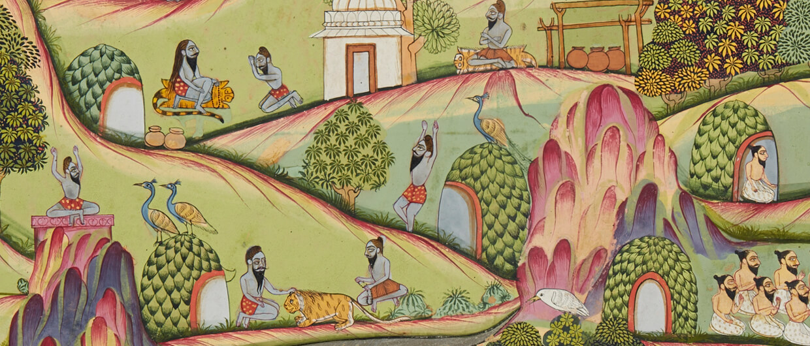
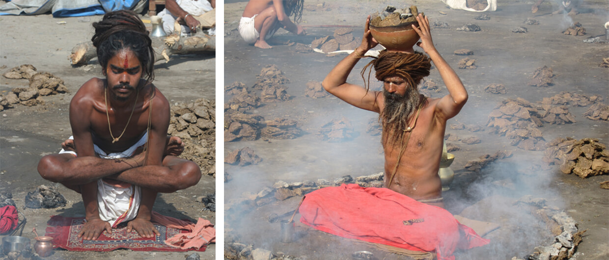
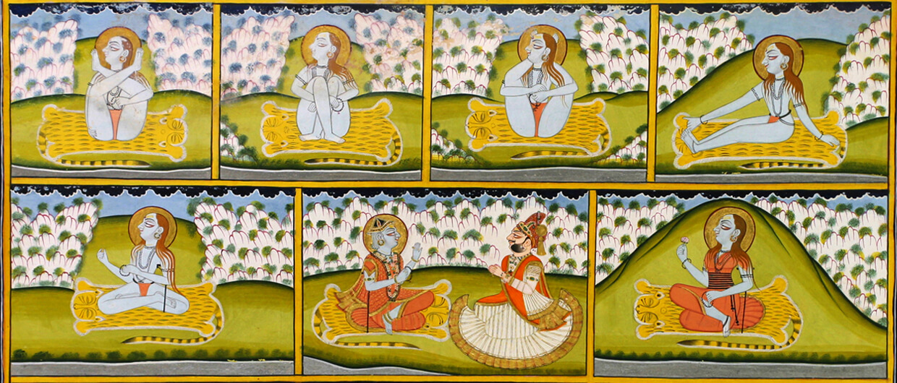
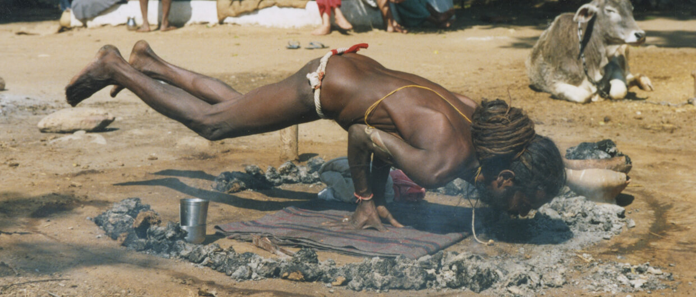
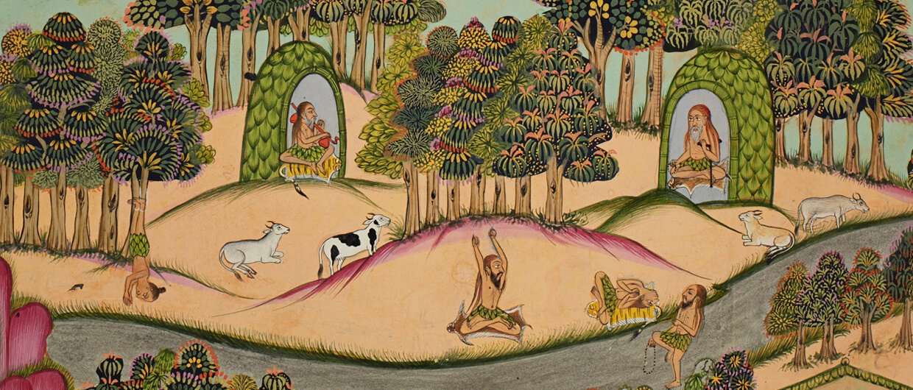

THE HAṬHA YOGA PROJECT
The Haṭha Yoga Project was a research project funded by the European Research Council which was hosted by SOAS University of London and ran from 2015 to 2020. Its primary aim was to chart the history of physical yoga practice by means of philology, i.e. the study of texts on yoga, and ethnography, i.e. fieldwork among practitioners of yoga. The project team consisted of four researchers based at SOAS and two at the École française d’Extrême Orient, Pondicherry.
The project’s primary outputs are critical editions and annotated translations of ten Sanskrit texts on haṭha yoga and a range of monographs, journal articles, book chapters and encyclopedia entries.